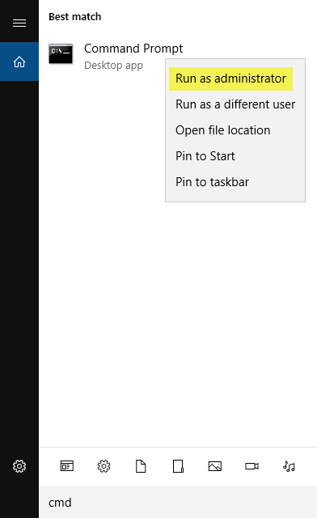
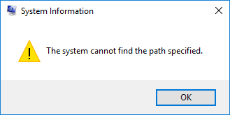
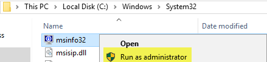
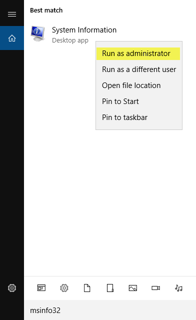
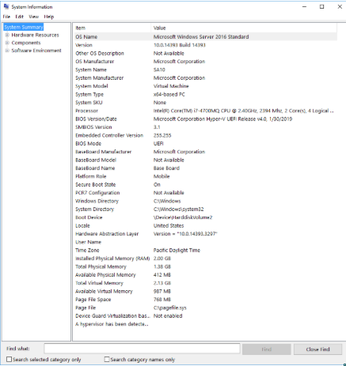

Summary: How to extract computer information using msinfo32
Issue: When collecting information for troubleshooting, it is imperative to collect details of the system that the application is running on. This may also apply to hosts which are targeted for data collection and/or running an agent.
Instructions: Using Windows built in msinfo32.exe, you can collect detailed information about the
affected System. This should be done for any troubleshooting that requires further
investigation.
This can be done using the command line:
- Open a Command Prompt as Administrator
- Run the following command, changing the target output destination and name as required.
msinfo32 /report C:\Stealthbits\Server.txt
- To run 'Command Prompt' as Administrator, use the Windows search for CMD and when 'Command Prompt' appears right click and choose 'Run as administrator'.

(Please note: if the destination directory does not exist, the following error will occur: "The system cannot find the path specified.")

- A second option is to run msinfo32.exe from the User Interface. This must be run as Administrator, and can be executed from the following location by right clicking msinfo32.exe and choosing 'Run as administrator':
-
%windir%\system32\msinfo32.exe

- A third option is to use the Windows search for msinfo32, and when "System Information" appears right click and choose 'Run as administrator'.

You will be presented with the following Window:

- From within the user interface:
- Select File > Export
- Enter the location and name of the file to export.
Once completed using the command line or user interface collect the exported report
file.
Salesforce Article ID: 000002630